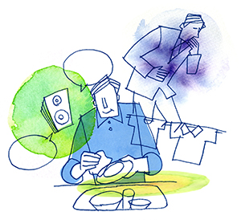

病気不安症（普通神経質）2
疾病恐怖に苦しむ
（普通神経症（不安感と腹痛、吐き気などの身体症状の悩み））
伊藤 和博（仮名）56歳・営業管理（体験フォーラム会員）
身体症状へのこだわりとプレッシャー
嗚呼、思い起こせば、若いときから神経質の素質があったのでしょう。身体に対してのこだわりは、30代のころからでした。38歳で上海に仕事で赴任になり、また、ストレスも加わり、仕事も非常に忙しく過ごしていました。
それから10年ほど経ち、日本人の部下が増え、営業をおり管理をするようになり、自分自身ばかり見るようになりました。周囲には身体の症状、たとえば、「おなかが痛い」とか、「吐き気がする」とか毎日のように言ってました。また、病院に1日2度行って仕事から逃避する時期がありました。そのうち、心療内科へ行きましたが、良くなるどころか悪くなる一方でした。
会社からは中国の仕事は全部責任を任されプレッシャーは増す一方でした。これではいけないと思えば思うほど、焦れば焦るほど罠にはまってきました。自分の見栄っ張りな面がどうしても投げ出すわけには行きませんでした。会社で、ベストキーマンなどの賞を頂き、有頂天になったのは、事実でした。
そこからどん底に入って行きました。まさに奈落の底でした。
それから1か月ほど会社を休み、妻子の世話になりました。約1ヶ月で復帰し、そして1ヶ月後に上海に戻りました。
森田を学び、苦しみを受け入れる
そのころは必死で、何かにもがいていました。もうまるで夢遊病者のようになって行ったり来たり、ウロウロしています。そんなころ岡本記念財団の体験フォーラムに出会いました。はじめは本当に、身体のことばかり訴えておりました。毎日続く愚痴に対して、よくもまあ突き放されなかったものです。
そして半年ばかり経ってから思い立ち、体験フォーラムの管理人さんに会って直にお礼を言いに日本に帰国しました。そのころはまだ疲労もあり会いに行くだけで緊張でした。身体が悲鳴を上げ助けて欲しいと上海から電話をしたこともありました。粘り強く本当に親身になって相談に応じてくれたものですから一言だけでもお礼が言いたかったのです。
それから約1年がたち、自分の思いを会社や家庭でも伝えられるようになりました。じわっじわっと森田先生の教えが、耳からの学習によって染み染みと、少しずつではありますが、身体に染みついていきました。森田先生の神経質講義を基本に、やっとそのスピリッツを理解できるようになりました。印象に残っている言葉は「苦楽共存」です。「人生は苦しいことのほうが多いし、責任者である以上、それが仕事なんだ」、そして「どんな苦しくても、それを表情には出さないことが責任者の仕事なんだ」ということに気づきました。また、いつも周囲に身体の症状を話していたこと、そのことも反省しました。
これからは、家族を大切にし、周りの方を大切に生きていこうと思います。管理人さんをはじめ、ここで知り合えた仲間には、感謝の気持でいっぱいです。本当にありがとうございました。私のような頑固な人間でも前に向かって進んでいけるのですから、若い方たちには、もっと人生を大切にしていただきたいと思います。私のように長患いせぬように真似ぬようにくれぐれもお願いをします。15年という上海での単身赴任生活は孤独です。このフォーラムに参加して、多くの仲間と知り合えたことは、本当に宝物です。重ねて厚くお礼を申し上げます。
体験フォーラムを利用して
フォーラムでは、一人一人の悩みに対して森田先生の教えが返事として帰ってきます。飲み込みの悪い私は随分と日時を要しましたが、大抵の人は一月もあれば森田先生の教えを実行し神経症が簡単に治って行かれます。熱心な人は少しでも森田先生の教えを管理人から引き出そうと毎日の出来事の中から質問をします。この返事が森田先生の書籍から引用され大変見事でしかも早い返事が帰って来ます。森田先生はすでにお亡くなりになってから70年からの歳月が過ぎ去っていますが、まるで森田先生がこの世に現れたかのように直々に教えていただいているみたいで誠にありがたいものです。そういう訳ですから飲み込みの早い者は悔しいですが数週間で見事に苦悩を乗り越えて社会へ羽ばたいて行かれます。
さらに凄いのは専門医に見てもらい相談すると高額な費用がかかりますが、財団さんのお陰でこの相談がなんと無料で受けられるのです。その上、入院森田療法家の東京慈恵会医科大学の先生方からも毎月一度貴重なコメントが頂けるのです。こんなありがたいシステムは日本のいや世界のどこを探してもないと思います。

フォーラムではいつしか森田先生の教えと東京慈恵会医科大学の先生方のコメントを朗読し録音して何度も何度も耳からリピートしながら学びます。この勉強方法が便利なのはどこででも学べることです。私は通勤時間を利用して、仕事に精を出しながら、寂しい単身赴任の家に帰るとこれまた耳から学びながら掃除や洗濯、自炊をやって行きました。この勉強法をフォーラムの管理人さんはずいぶん古くからやって来られたそうです。この勉強法のお陰で一度も神経症を再発したことはないと言われます。肉体は衰えもするが精神は年々若返るようだとお元気そのものです。
この勉強方法を教わった多くの神経症者が、今克服体験談をフォーラム内に次々と発表されています。新しく訪れます苦悩者がこれを読んでまた励まされ的確な指導を受け、またひとり、またひとりと元気に社会に羽ばたいていかれます。正直、若い学生さんが素早く治る様子を見て私は悔しいこと情けないこととても言葉になりません。しかし、事実なんです。私の目の前で起こっている事実なんです。そして、こんな私でもこうして今日皆様の前に立って神経症克服体験発表が行えるのですから森田先生の教えに出会えて本当に良かったと思います。
最後にフォーラムの管理人さんはこれまで一年365日、一日も休むことなく私達を暖かく見守ってくださいました。いったいこの人はいつ眠っているのだろうかと我々を驚かせます。私たちは管理人さんの過去を知れば知るほどその苦しみの深いことを知り『ああ、こういう人だからこそ……このように……。』との感謝に絶えません。森田先生の名誉のためにも治らんわけにはいかんと思った次第です。
これにて私の拙い体験を終わります。